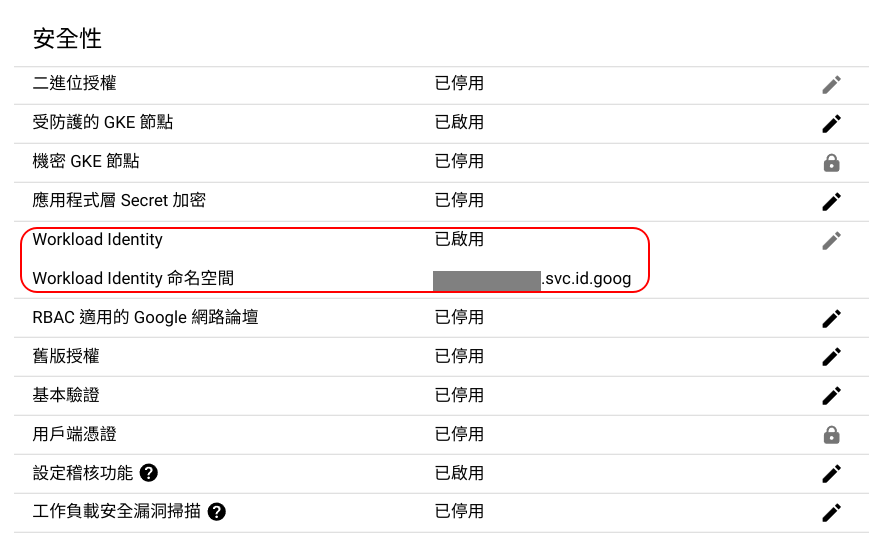

GKE 上使用 Workload Identity
前言
以前在 GKE 內的應用程式若是有需要存取其他 GCP 上的服務時，會需要建立一個專用的 Service Account 並且將該帳戶賦予對應的權限，再將 JWT 掛載到應用程式。
這對於管理與資安上都是一大的隱憂，只要 JWT 不小心被有心人士拿到，就可以有相對應的權限。
而 GKE 上 Workload Identity 就是用來解決 JWT 需要下載使用的問題，只要 JWT 不外流，對於安全性就更上一層樓了。 只需要 kubernetes service account(簡稱 KSA) 與 google service account(簡稱 GSA) 進行綁定，再將 KSA 賦予給 Pod，應用程式就會有相對應的權限可以使用。
使用 Workload Identity 也是 Google 比較建議用來連接 GSA 的方式
Workload Identity is the recommended way for your workloads running on Google Kubernetes Engine (GKE) to access Google Cloud services in a secure and manageable way.
啟用 Workload Identity
要使用 Workload Identity，那就必須要先讓 GKE 支援 Workload Identity，可以從 Master Node 去確認有沒有啟用

如果一開始建立叢集時沒有預先啟動，那麼之後要啟動的話，所以有的 Worker Node 都必須重新生成過一遍才會生效，這點需要注意。
Google 是建議啟用 Workload Identity 後，直接重新 create 新的 node pool
We recommend creating new node pools if you also need to modify your applications to be compatible with Workload Identity.
確認自身權限
先確認自身操作權限是否有以下兩個：
- roles/container.admin (Kubernetes Engine 管理員)
- roles/iam.serviceAccountAdmin (服務帳戶管理員)
讓 Application 使用 Workload Identity
溫馨小提醒：
- 這邊的 Project ID 統一用 demo-123
- 以下示範建議搭配官方文件的指令服用，這樣會比較清楚各欄位要填什麼
- 如果熟練的話也可自行將部份指令轉成描述檔(YAML)
建立測試用 Namespace
1 | kubectl create namespace workload-identity |
建立測試用 kubernetes service account 在 workload-identity Namespace
1 | kubectl create serviceaccount ksa-workload-identity \ |
建立測試用 google service account
1 | gcloud iam service-accounts create gsa-workload-identity \ |
賦予測試的 GSA 一個權限
1 | gcloud projects add-iam-policy-binding demo-123 \ |
將 KSA(ksa-workload-identity) 與 GSA(gsa-workload-identity) 進行綁定，有兩種方式：
- 使用 Google SDK
- 使用 K8s 描述檔：管理上較方便
使用 Google SDK
1 | gcloud iam service-accounts add-iam-policy-binding gsa-workload-identity@demo-123.iam.gserviceaccount.com \ |
解除綁定的方式 add-iam-policy-binding 改成 remove-iam-policy-binding
1 | gcloud iam service-accounts remove-iam-policy-binding gsa-workload-identity@demo-123.iam.gserviceaccount.com \ |
使用 K8s 描述檔
1 | apiVersion: iam.cnrm.cloud.google.com/v1beta1 |
調整 KSA 的設定，新增 annotation 資訊
1 | kubectl annotate serviceaccount ksa-workload-identity \ |
前面一開始只是先建立 KSA，上方又在多新增 annotations，所以寫成描述檔會是下面這樣
1 | apiVersion: v1 |
功能驗證的話有兩種，一種是直接將目標應用程式加上相關設定去測試，另外一種是 Google 提供的簡易測試，如下
Application 功能驗證
在 Pod 或 Deployment 的描述檔新增以下片段，以便賦予 KSA，此時該應用服務就可以有相對應的 IAM 權限
1 | spec: |
簡易功能驗證
佈署以下服務，假設檔名為 wi-test.yaml
1 | apiVersion: v1 |
1 | kubectl apply -f wi-test.yaml |
進入 Pod 內
1 | kubectl exec -it workload-identity-test \ |
利用 curl 指令進行驗證：
回傳內容為 GSA E-mail
1
curl -H "Metadata-Flavor: Google" http://169.254.169.254/computeMetadata/v1/instance/service-accounts/default/email
取得 Token
1
curl -H "Metadata-Flavor: Google" http://169.254.169.254/computeMetadata/v1/instance/service-accounts/default/token
清理 Pod
1 | kubectl delete -f wi-test.yaml |
文後討論
如果是使用 Autopilot clusters 在設定上會有些許不同，此時建議直接參考官方文件會比較恰當